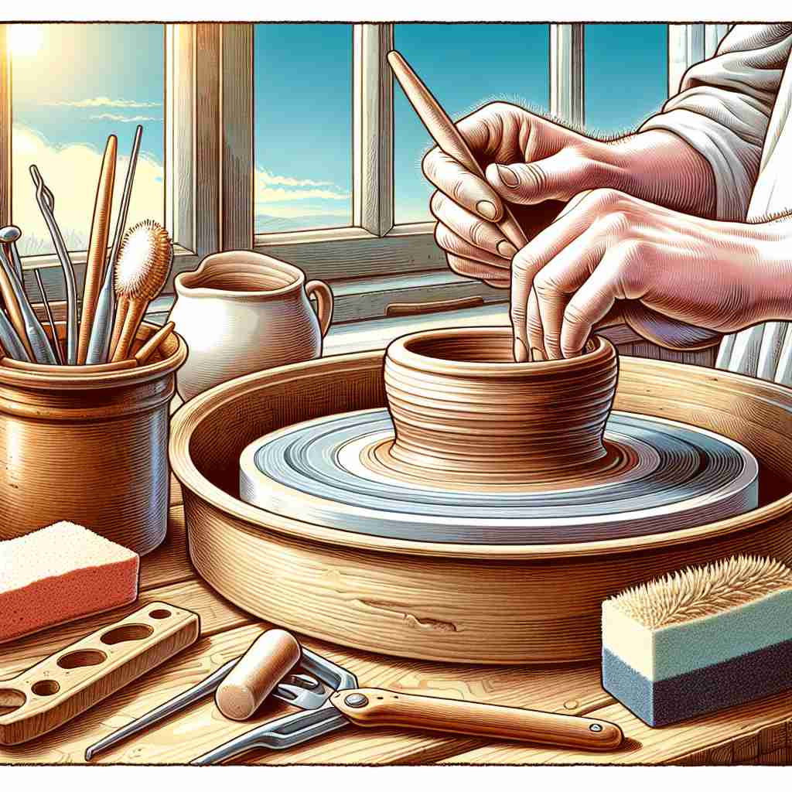
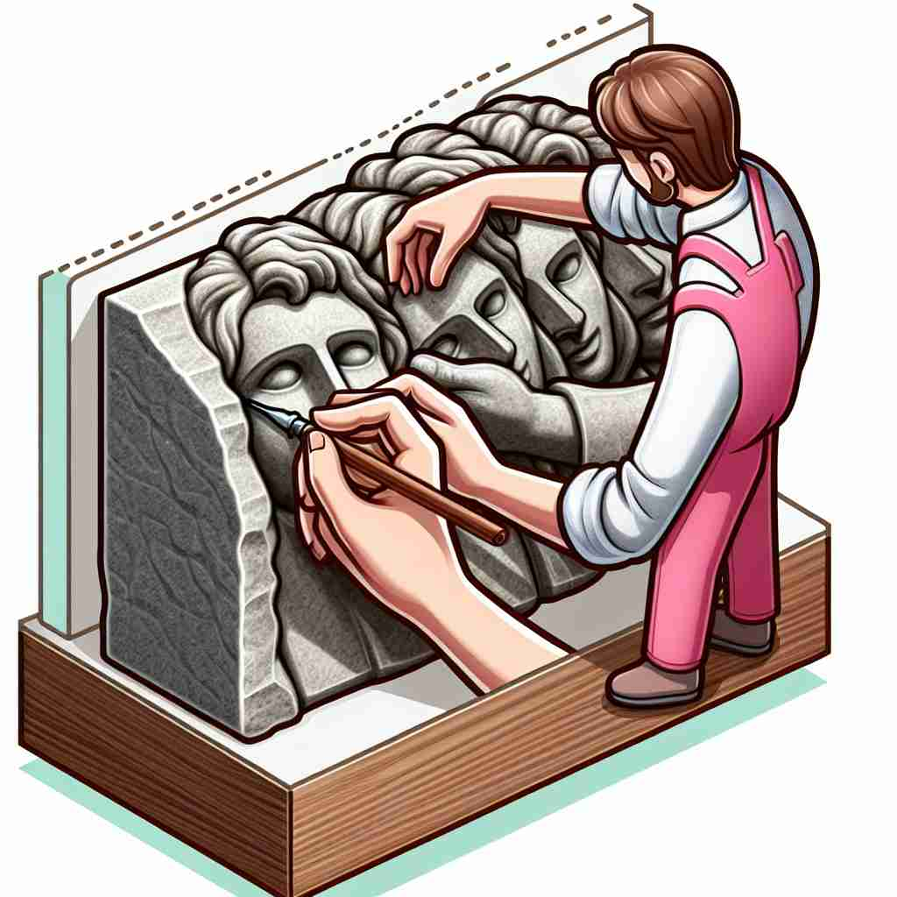

💬 The artist wants to mould the clay into a beautiful pot. 艺术家想要把泥土塑造成一个美丽的花瓶。

💬 The artist will mould a sculpture from the stone. 艺术家将用石头雕刻一座雕塑。

💬 The artist will make a mold for the new sculpture. 艺术家将为新雕塑制作一个模具。
💬 The artist wants to mould the clay into a beautiful pot. 艺术家想要把泥土塑造成一个美丽的花瓶。
💬 The artist will mould a sculpture from the stone. 艺术家将用石头雕刻一座雕塑。
💬 The artist will make a mold for the new sculpture. 艺术家将为新雕塑制作一个模具。
🧠 想象一个模具（mould）的形状和功能。它可以塑造物体，定义特征，作为指导，甚至联想到覆盖物。无论是具体的模具还是抽象的塑造过程，都源于这个核心概念。通过这个中心意象，你可以轻松联想并记住'mould'的各种含义。
🗝️ n. a hollow container used to give shape to liquid or malleable material 一个用来为液体或可塑材料赋形的空心容器
🎭 在一个繁忙的巧克力工厂里，工人们将熔化的巧克力倒入一个个不同形状的模具中。模具精巧地成型后，在冷却过程中慢慢凝固，最终成为各种形状的巧克力。
💬 The chef used a heart-shaped mould to make chocolate candies. 厨师使用心形模具制作巧克力糖果。
🌳 源自拉丁词根 "mold-/mould-"，意为模具或形状。该词同时可以表示模具、模子或霉菌。
💡 记忆 "mould" 时，可以联想模具的形状或模范作用，形成某种东西的形状或模型。同时，将发霉的概念与模具联系起来，以帮助记住不同的含义。
🗝️ v. to shape or form, especially in a particular way 塑造或形成，特别是以特定的方式。
🎭 在一个艺术课堂上，学生们正热情地用黏土捏出各种形状。老师耐心地引导他们如何用双手塑造黏土，将它们模成他们心中想要的形态。
💬 The sculptor moulded the clay into a beautiful statue. 雕塑家将泥土塑造成了一座美丽的雕像。
🤔 从模具的功能引申为塑造或形成
🗝️ n. a distinctive and typical style, form, or character 一种独特且典型的风格、形式或特征
🎭 在剧院大厅中，观众们正欣赏一位独特的喜剧演员。他的表演风格十分独特，以其特有的模样和风趣的表现博得满堂喝彩，这正展现了他特有的'模子'。
💬 He doesn't fit the usual mould of a politician. 他并不符合一般政治家的模式。
🤔 从模具产生特定形状引申为特征或风格
🗝️ n. a frame or template used as a guide to make a shape or pattern 用于制作形状或图案的框架或模板。
🎭 在一个DIY工作坊中，参与者们兴致勃勃地用纸板制作模板，以便在木板上雕刻出精细而复杂的花纹。这些模板为他们提供了精准的指导。
💬 The carpenter used a mould to ensure all the cornices were identical. 木匠使用模具以确保所有的檐口都是一致的。
🤔 从模具的功能扩展为指导性的框架或模板
🗝️ n. a furry growth of minute fungi occurring typically in moist warm conditions 在潮湿温暖条件下典型出现的微小真菌的毛状生长。
🎭 在一个未通风的地下室角落，墙壁上和食品表面长出了绿色的霉菌。这些细小的真菌在潮湿和温暖的环境条件下迅速繁殖。
💬 The old bread in the cupboard was covered with green mould. 橱柜里的旧面包上长满了绿色霉菌。
🤔 从模具的形状特征联想到覆盖物的形态
🗝️ v. to develop mould; become mouldy 发展霉菌；变得发霉
🎭 在一个被遗忘的厨房橱柜里，一块面包放置了许久。时间渐渐过去，面包表面开始长出斑斑点点的霉菌，逐渐变得发霉。
💬 The cheese will mould if left out of the refrigerator. 奶酪如果放在冰箱外面会发霉。
🤔 从霉菌名词引申出的动词用法